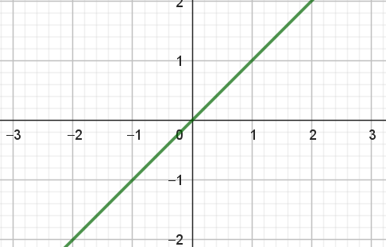

Kunstige neuroner
Vi vil her beskrive kunstige neuroner, som er en udvidelse af den klassiske perceptron, men med den tilføjelse at vi her indfører en såkaldt aktiveringsfunktion. De kunstige neuroner er de byggesten, som et kunstigt neuralt netværk består af, og kan dermed ses som en trædesten på vej mod at forstå generelle kunstige neurale netværk.
Medlemsapp til Good Food
Lad os tage udgangspunkt i et fiktivt eksempel. Vi forestiller os, at dagligvarekæden Good Food er ved at udvikle en ny medlemsapp, som kunderne kan hente og bruge til at aktivere forskellige tilbud, når de handler i Good Food. Når kunderne opretter en profil i app’en, oplyser de deres navn, fødselsdato og køn. Samtidig registrer app’en løbende, hvilke køb kunden foretager, hvilken ugedag de handler med videre. For at undgå at app’en bliver for uoverskuelig for kunderne, skal app’en kun vise et begrænset udvalg af tilbud, som kunden skal aktivere for at få rabat. For eksempel skal en midaldrende mand, som i den seneste måned har købt for 10000 kr. i app’en, have vist nogle andre tilbud end en teenagepige, som kun sjældent handler i Good Food.
Good Food sætter derfor en undersøgelse i gang. Om alle deres kunder, som har app’en, registrerer de:
- \(x_1\): kundens alder målt i år
- \(x_2\): kundens forbrug i Good Food den seneste måned målt i kr.
Disse to værdier \(x_1\) og \(x_2\) kaldes for inputværdier. Samtidig har de i en periode for hver kunde registreret, om kunden har aktiveret et bestemt tilbud. Denne information gemmes på denne måde:
\[ t= \begin{cases} 1 & \textrm{hvis tilbuddet aktiveres} \\ 0 & \textrm{hvis tilbuddet ikke aktiveres} \\ \end{cases} \]
Værdien \(t\) kaldes for en targetværdi, fordi det er denne værdi, vi gerne i fremtiden vil kunne forudsige baseret på kundens alder og forbrug. Hvis Good Food kan forudsige, om en given kunde med stor sandsynlighed vil aktivere et bestemt tilbud, så vil det være en god idé at vise lige præcis dét tilbud fremfor et alternativ, som kunden måske er mindre tilbøjelig til at aktivere.
Et datasæt, som for hver kunde består af inputværdierne \(x_1\), \(x_2\) og den tilhørende targetværdi \(t\), kaldes for et træningsdatasæt. I figur 1 ses et fiktivt eksempel på sådan et træningsdatasæt. Her er et punkt farvet rødt, hvis targetværdien er \(1\) (det vil sige, at tilbuddet er aktiveret) og blåt, hvis targetværdien er \(0\) (og tilbuddet er ikke aktiveret).
For at forudsige – eller med et fint ord: at prædiktere – om tilbuddet aktiveres eller ej, vil vi prøve, om vi kan beregne en værdi \(o\) (\(o\) kaldes også for outputværdien), som kunne være et bud på sandsynligheden for, at en kunde med en given alder og et givent forbrug vil aktivere tilbuddet1. En måde at modellere en sandsynlighed på er at bruge en såkaldt sigmoid-funktion. Forskriften for sigmoid-funktionen er
1 Læg mærke til at det er en sandsynlighed, som vi forsøger at beregne. Man kan sagtens forestille sig to kunder på præcis samme alder og med præcis samme forbrug, hvor den ene vil aktivere tilbuddet, mens den anden ikke vil. Vi kan altså ikke forudsige nøjagtigt, hvad en given kunde vil gøre – men vi kan måske være heldig at komme med et godt bud på sandsynligheden for, at en bestemt kunden vil aktivere tilbuddet.
\[ \sigma(x)=\frac{1}{1+\mathrm{e}^{-x}} \tag{1}\]
og grafen ses i figur 2.
Definitionsmængden for sigmoid-funktionen er alle reelle tal, mens værdimængden er intervallet \((0,1)\). Det kan skrives sådan her:
\[ \sigma: \mathbb{R} \rightarrow (0,1). \]
Da værdimængden er \((0,1)\), kan sigmoid-funktionen netop bruges til at modellere sandsynligheden for om tilbuddet aktiveres. Spørgsmålet er nu, hvordan man gør det.
Vi vil gerne have, at sigmoid-funktionen på en eller anden måde afhænger af vores inputværdier \(x_1\) og \(x_2\). Det kan man gøre på mange måder, men en ofte anvendt metode er, at "sende" en linearkombination2 af inputværdierne ind i sigmoid-funktionen, så outputværdien \(o\) beregnes sådan her:
2 En linearkombination af \(x_1\) og \(x_2\) betyder bare en vægtet sum: \(w_0 + w_1 \cdot x_1 + w_2 \cdot x_2\), hvor \(w_0, w_1\) og \(w_2\) er konstanter.
\[ o = \sigma(w_0 + w_1 \cdot x_1 + w_2 \cdot x_2). \tag{2}\]
Her kaldes \(w_0, w_1\) og \(w_2\) for vægte.
Grafisk kan det illustreres sådan her:
Opgaven bliver nu, at finde værdier af disse vægte sådan, at outputværdien \(o\) for givne værdier af \(x_1\) og \(x_2\) bliver god til at modellere sandsynligheden for, om tilbuddet aktiveres eller ej.
Det er her, at træningsdata kommer i spil, fordi vi for en lang række af inputværdier \(x_1\) og \(x_2\) jo faktisk ved, om tilbuddet blev aktiveret eller ej (husk på at den oplysning er gemt i targetværdien \(t\)).
Forestil dig for en stund at vi på en eller anden måde har bestemt værdier af \(w_0, w_1\) og \(w_2\). Vi kan nu sammenligne værdien af \(o\) (vores pt bedste bud på sandsynligheden) og targetværdien (som er den værdi, vi gerne vil kunne forudsige). Hvis \(t=0\) vil vi også gerne have, at \(o\) er tæt på \(0\), og omvendt hvis \(t=1\) vil vi gerne have, at \(o\) er tæt på \(1\). Det vil sige, at differensen
\[ t-o = t-\sigma(w_0 + w_1 \cdot x_1 + w_2 \cdot x_2) \] ønskes tæt på \(0\). Nu kan differensen både være positiv og negativ, og for at slippe for fortegn vælger vi i stedet at se på den kvadrerede differens: \[ \left ( t-\sigma(w_0 + w_1 \cdot x_1 + w_2 \cdot x_2) \right )^2 \]
Der er ikke bare data fra én, men fra rigtig mange kunder og derfor vælger man, at summere (det vil sige, "at lægge sammen") alle disse kvadrerede differenser:
\[ E = \frac{1}{2} \sum \left ( t-\sigma(w_0 + w_1 \cdot x_1 + w_2 \cdot x_2) \right )^2, \]
hvor der altså her summeres over alle træningsdata. Vi har lige ganget med \(\frac{1}{2}\) foran. Det kan virke lidt mærkeligt, men du ser fidusen senere.
Hvis vægtene \(w_0, w_1\) og \(w_2\) er valgt, så sigmoid-funktionen er god til at prædiktere, om tilbuddet aktiveres eller ej, så vil ovenstående udtryk være tæt på \(0\). Det vil sige, at hvis \(E\) er tæt på \(0\), så har vi valgte gode værdier af vægtene, mens hvis \(E\) er langt væk fra \(0\), så har vi valgt mindre gode værdier af vægtene (i forhold til det overordnede ønske om at være i stand til at prædiktere om tilbuddet aktiveres eller ej). Denne funktion \(E\), som jo afhænger af vægtene \(w_0, w_1\) og \(w_2\), kaldes for en tabsfunktion (eller på engelsk loss function).
Nu er vægtene jo ikke givet på forhånd, men det er lige præcis tabsfunktionen, man bruger til at bestemme "gode" værdier af vægtene. Det gøres ved at bestemme de værdier af vægtene, som minimerer tabsfunktionen. Det er altså et optimeringsproblem, vi står overfor. Hvordan det løses, kan du læse om i næste afsnit.
Hvordan bestemmes vægtene?
Inden vi går i gang med at finde ud af, hvordan vægtene bestemmes, så værdien af tabsfunktionen bliver så lille som mulig, vil vi gøre ovenstående lidt mere generelt. For det første har man i virkelighedens verden sjældent kun to inputværdier \(x_1\) og \(x_2\). Vi siger derfor helt generelt, at vi har \(n\) inputværdier \(x_1, x_2, \cdots, x_n\). Det betyder, at outputværdien \(o\) nu beregnes sådan her:
\[ o = \sigma (w_0 + w_1 \cdot x_1 + w_2 \cdot x_2 + \cdots + w_n \cdot x_n). \]
Den generelle kunstige neuron kan illustreres sådan her:
Samtidig forestiller vi os, at vi har \(M\) træningsdata. Det vil sige, \(M\) forskellige træningseksempler bestående af inputværdier med tilhørende targetværdi. Det kan opskrives sådan her:
\[ \begin{aligned} &\text{Træningseksempel 1:} \quad (x_1^{(1)}, x_2^{(1)}, \dots, x_n^{(1)}, t^{(1)}) \\ & \quad \quad \quad \quad \vdots \\ &\text{Træningseksempel m:} \quad (x_1^{(m)}, x_2^{(m)}, \dots, x_n^{(m)}, t^{(m)}) \\ & \quad \quad \quad \quad \vdots \\ &\text{Træningseksempel M:} \quad (x_1^{(M)}, x_2^{(M)}, \dots, x_n^{(M)}, t^{(M)}) \\ \end{aligned} \]
Tabsfunktionen bliver da
\[ \begin{aligned} E(w_0, w_1, &\dots, w_n) \\ &= \frac{1}{2} \sum_{m=1}^{M} \left (t^{(m)}- \sigma(w_0 + w_1 \cdot x_1^{(m)} + \cdots + w_n \cdot x_n^{(m)}) \right)^2. \end{aligned} \]
Tabsfunktionen er en funktion af flere variable. I princippet kan man bestemme minimum ved at sætte alle de partielle afledede lig med \(0\), løse ligningerne og dernæst overbevise sig selv om, at man har fundet et minimum. Det vil give et ligningssystem med \(n+1\) ligninger, som alle er koblet med hinanden. Det viser sig, at være en beregningsmæssig tung opgave at løse dette ligningssystem analytisk. Derfor bruger man i stedet for den metode, som kaldes for gradientnedstigning. Gradientnedstigning går ud på først at vælge tilfældige værdier af vægtene \(w_0, w_1, \cdots, w_n\). Det viser sig så, at den negative gradient vil pege i den retning, hvor funktionsværdien falder mest. Derfor er idéen at bevæge sig et lille stykke i den negative gradients retning – fordi vi så kommer lidt tættere på minimum. Når vi har gjort det, beregner vi gradienten igen, og bevæger os igen et lille stykke i den negative gradients retning. Det forsætter vi med indtil værdien af tabsfunktionen ikke ændrer sig særlig meget, hvilket svarer til, at vi har fundet minimum.
Når vi for alle vægtene bevæger os et lille stykke i den negative gradients retning, kan opdateringen af vægtene skrives sådan her:
\[ \begin{aligned} w_0^{(\textrm{ny})} \leftarrow & w_0 - \eta \cdot \frac{\partial E }{\partial w_0} \\ w_1^{(\textrm{ny})} \leftarrow & w_1 - \eta \cdot \frac{\partial E }{\partial w_1} \\ &\vdots \\ w_n^{(\textrm{ny})} \leftarrow & w_n - \eta \cdot \frac{\partial E }{\partial w_n} \\ \end{aligned} \]
hvor \(\eta\) (udtales "eta") kaldes for en learning rate. Det er \(\eta\), som bestemmer hvor stort et skridt i gradientens retning, vi tager. Den konkrete værdi af \(\eta\) sættes til et lille tal større end \(0\). Det kunne for eksempel være \(0.01\), men her må man prøve sig lidt frem. Pilene til venstre illustrerer opdatering af vægtene.
For at foretage opdateringerne har vi altså brug for at bestemme den partielle afledede for hver af vægtene. Den partielle afledede for den \(i\)’te vægt kan findes ved at bruge sum- og kædereglen:
\[ \begin{aligned} \frac{\partial E}{\partial w_i} &= \frac{1}{2} \sum_{m=1}^{M} \frac{\partial}{\partial w_i}\left (t^{(m)}- \sigma(w_0 + w_1 \cdot x_1^{(m)} + \cdots + w_n \cdot x_n^{(m)}) \right)^2 \\ &= \frac{1}{2} \sum_{m=1}^{M} 2 \cdot \left (t^{(m)}- \sigma(w_0 + w_1 \cdot x_1^{(m)} + \cdots + w_n \cdot x_n^{(m)}) \right) \\ & \quad \quad \quad \quad \cdot \frac{\partial}{\partial w_i} \left (t^{(m)}- \sigma(w_0 + w_1 \cdot x_1^{(m)} + \cdots + w_n \cdot x_n^{(m)} ) \right) \\ &= \sum_{m=1}^{M} \left (t^{(m)}- \sigma(w_0 + w_1 \cdot x_1^{(m)} + \cdots + w_n \cdot x_n^{(m)}) \right) \\ & \quad \quad \quad \quad \cdot \frac{\partial}{\partial w_i} \left (t^{(m)}- \sigma(w_0 + w_1 \cdot x_1^{(m)} + \cdots + w_n \cdot x_n^{(m)} ) \right) \\ \end{aligned} \tag{3}\]
Bemærk, at \(\frac{1}{2}\) forkortede ud – det var derfor, at vi gangede \(\frac{1}{2}\) på tabsfunktionen til at starte med.
Betragter vi nu kun den sidste faktor og bruger kædereglen igen, får vi
\[ \begin{aligned} \frac{\partial}{\partial w_i} (t^{(m)} &- \sigma(w_0 + w_1 \cdot x_1^{(m)} + \cdots + w_n \cdot x_n^{(m)} )) = \\ &- \sigma'(w_0 + w_1 \cdot x_1^{(m)} + \cdots + w_n \cdot x_n^{(m)})\cdot \\ & \qquad \qquad \qquad \qquad \frac{\partial}{\partial w_i} \left (w_0 + w_1 \cdot x_1^{(m)} + \cdots + w_n \cdot x_n^{(m)} \right) \end{aligned} \]
Nu er
\[ \frac{\partial}{\partial w_i} \left (w_0 + w_1 \cdot x_1^{(m)} + \cdots + w_i \cdot x_i^{(m)} + \cdots + w_n \cdot x_n^{(m)} \right) = x_i^{(m)} \tag{4}\]
når \(i \in \{1, 2, \dots, n\}\). Så \[ \begin{aligned} \frac{\partial}{\partial w_i} (t^{(m)} - \sigma(w_0 &+ w_1 \cdot x_1^{(m)} + \cdots + w_n \cdot x_n^{(m)} )) = \\ &- \sigma'(w_0 + w_1 \cdot x_1^{(m)} + \cdots + w_n \cdot x_n^{(m)})\cdot x_i^{(m)} \end{aligned} \]
Vi mangler nu bare at finde den afledede sigmoid-funktion. Man kan vise – se forløbet om aktiveringsfunktioner – at
\[ \sigma'(x)=\sigma(x)\cdot(1-\sigma(x)) \]
Derfor bliver
\[ \begin{aligned} \frac{\partial}{\partial w_i} (t^{(m)} - \sigma(w_0 &+ w_1 \cdot x_1^{(m)} + \cdots + w_n \cdot x_n^{(m)} )) = \\ &- \sigma(w_0 + w_1 \cdot x_1^{(m)} + \cdots + w_n \cdot x_n^{(m)}) \cdot \\ & (1-\sigma(w_0 + w_1 \cdot x_1^{(m)} + \cdots + w_n \cdot x_n^{(m)} )) \cdot x_i^{(m)} \end{aligned} \]
I eksemplet med Good Food app’en kaldte vi \(\sigma(w_0 + w_1 \cdot x_1 + w_2 \cdot x_2)\) for outputværdien \(o\) (se (2)). På samme måde kan vi at gøre ovenstående lidt mere læsevenligt ved at kalde outputværdien hørende til det \(m\)’te træningseksempel for \(o^{(m)}\):
\[ o^{(m)} = \sigma(w_0 + w_1 \cdot x_1^{(m)} + \cdots + w_n \cdot x_n^{(m)}) \]
Vi får så
\[ \begin{aligned} \frac{\partial}{\partial w_i} (t^{(m)} - \sigma(w_0 + w_1 \cdot x_1^{(m)} + \cdots &+ w_n \cdot x_n^{(m)} )) = \\ &- o^{(m)}\cdot (1-o^{(m)}) \cdot x_i^{(m)} \end{aligned} \]
Indsættes dette i (3) samtidig med at vi bruger, at
\[o^{(m)} = \sigma(w_0 + w_1 \cdot x_1^{(m)} + \cdots + w_n \cdot x_n^{(m)})\]
får vi
\[ \begin{aligned} \frac{\partial E}{\partial w_i} = - \sum_{m=1}^{M} \left (t^{(m)}-o^{(m)} \right) \cdot o^{(m)}\cdot (1-o^{(m)}) \cdot x_i^{(m)} \end{aligned} \]
Dette gælder for \(i \in \{1, 2, \dots, n \}\). Når \(i=0\) kan det fra (4) ses, at den partielle med hensyn til \(w_0\) bliver \(1\). Derfor er det ikke svært at overbevise sig selv om, at
\[ \frac{\partial E}{\partial w_0} = - \sum_{m=1}^{M} \left (t^{(m)}-o^{(m)} \right) \cdot o^{(m)}\cdot (1-o^{(m)}) \cdot 1 \]
Vi ender således med:
I praksis vil man som sagt blive ved med at opdatere vægtene, indtil værdien af tabsfunktionen ikke ændrer sig særlig meget.
Når vi på den måde har bestemt værdien af vægtene, kan vi bruge outputværdien \(o\) til at forudsige, om en kunde vil aktivere tilbuddet eller ej. Det vil vi gøre på denne måde:
\[ \textrm{Kunden aktiverer tilbuddet: } \begin{cases} \textrm{Ja} & \textrm{hvis } o \geq 0.5\\ \textrm{Nej} & \textrm{hvis } o < 0.5\\ \end{cases} \tag{5}\]
hvor
\[ o = \sigma(w_0 + w_1\cdot x_1 + \cdots + w_n \cdot x_n). \] Bemærk, at når vi tænker på \(o\) som sandsynligheden for, at kunden vil aktivere tilbuddet, så giver det god mening, at vi vil prædiktere, at kunden vil aktivere tilbuddet, hvis \(o \geq 0.5\) og ellers ikke.
Skillelinjen, som afgører, om vi prædikterer, at kunden aktiverer tilbuddet eller ej, går ved
\[ \sigma(w_0 + w_1\cdot x_1 + \cdots + w_n \cdot x_n) = 0.5. \]
Ser vi på definitionen af sigmoid-funktionen i (1) svarer det til, at
\[ \frac{1}{1+\mathrm{e}^{-(w_0 + w_1\cdot x_1 + \cdots + w_n \cdot x_n)}} = 0.5. \]
Nu giver brøken til venstre præcis \(0.5\), hvis
\[ \mathrm{e}^{-(w_0 + w_1\cdot x_1 + \cdots + w_n \cdot x_n)} = 1. \] Det vil sige, at
\[ w_0 + w_1\cdot x_1 + \cdots + w_n \cdot x_n = 0. \]
I vores eksempel om Good Food app’en havde vi kun to inputværdier. Det betyder, at ovenstående kan reduceres til
\[ w_0 + w_1\cdot x_1 + w_2 \cdot x_2 = 0. \] Det er lige præcis ligningen for en ret linje i et \((x_1,x_2)\)-koordinatsystem. Hvis vi i vores eksempel prøver at finde vægtene ved hjælp af gradientnedstigning, som beskrevet ovenfor, så ender vi med
\[ w_0 = -0.298, \quad w_1 = -0.0375 \quad \textrm{ og } \quad w_2=0.000769 \] Det giver ligningen \[ -0.298 - 0.0375\cdot x_1 + 0.000769\cdot x_2=0 \] hvilket også kan omskrives til
\[ x_2 = 48.7 \cdot x_1 +387 \]
eller måske den lidt mere velkendte skrivemåde:
\[ y = 48.7 \cdot x+387 \]
Indtegnes denne linje sammen med datasættet fra Good Food får vi:
Bemærk her, at den indtegnede linje er rigtig god til at adskille de røde punkter fra de blå i træningsdatasættet. Det betyder ikke nødvendigvis, at denne linje har samme gode prædiktive egenskab for et datasæt bestående af nye kunder. Hvis man gerne vil vurdere, hvor god modellen er på ukendte data, kan man for eksempel træne sin model på en delmængde af data (kaldet træningsdata) og så teste modellen på den resterende del af data (kaldet testdata). Man kan også anvende en metode, som kaldes for krydsvalidering. Det kan du alt sammen læse mere om i noten om Overfitting, modeludvælgelse og krydsvalidering.
Det vil nu være sådan, at for alle punkter \((x_1,x_2)\), som ligger over linjen i figur 5, vil
\[ -0.298 - 0.0375\cdot x_1 + 0.000769\cdot x_2 > 0. \] Det vil sige, at (se eventuelt figur 2) \[ o = \sigma (-0.298 - 0.0375\cdot x_1 + 0.000769\cdot x_2) > 0.5. \] Ifølge (5) betyder det, at for alle punkter, som ligger over linjen, vil vi prædiktere, at den tilhørende kunde, vil aktivere tilbuddet. Og det omvendte gælder så selvfølgelig for alle punkter, som ligger under linjen: her vil vi prædiktere, at de tilhørende kunder ikke aktiverer tilbuddet.
Lad os se på et eksempel.
Eksempel 1 Kunderne Hans og Gerda har downloadet Good Foods app. Hans er 50 år og har et forbrug på 3500 kroner. Gerda er derimod 65 år og med et forbrug på 2800 kroner.
Vi vil nu beregne outputværdien \(o\) for hver af de to kunder. Det gør vi ved at indsætte i: \[ o = \sigma (-0.298 - 0.0375\cdot x_1 + 0.000769\cdot x_2). \] Da får vi \[ \begin{aligned} &\textrm{Hans:} \quad \quad &o=\sigma (-0.298 - 0.0375\cdot 50 + 0.000769\cdot 3500) = 0.627 \\ &\textrm{Gerda:} \quad \quad &o=\sigma (-0.298 - 0.0375\cdot 65 + 0.000769\cdot 2800) = 0.358 \end{aligned} \]
Ifølge vores model er der altså en sandsynlighed på \(62.7 \%\) for, at Hans vil aktivere tilbuddet, mens den tilsvarende sandsynlighed for Gerda er på \(35.8 \%\). Vores bedste bud vil derfor være at prædiktere, at Hans vil aktivere tilbuddet, mens Gerda ikke vil. Vi vælger derfor at vise det pågældende tilbud til Hans, men ikke til Gerda.
På figur 6 ses de to punkter \((50,3500)\) og \((65,2800)\), som repræsenterer Hans og Gerda indtegnet. Her ses det også, at Hans’ punkt ligger over linjen (svarende til at vi mener, at han vil aktivere tilbuddet), mens Gerdas punkt ligger under linjen (svarende til at vi ikke mener, at hun vil aktivere tilbuddet).
Aktiviteringsfunktioner
Sigmoid-funktionen, som er anvendt her, kaldes for en aktiveringsfunktion. Her brugte vi den, fordi den har den egenskab, at værdimængden er \((0,1)\), og derfor kan outputværdien fra sigmoid-funktionen fortolkes som en sandsynlighed. Men man behøver ikke nødvendigvis at bruge sigmoid-funktionen som aktiveringsfunktion. Der findes en lang række andre aktiveringsfunktioner, som kan bruges i stedet for. Hvis du har lyst til at lære mere, kan du se på vores forløb om andre aktiveringsfunktioner.
Smartere end ADALINE?
Hvis du har læst noten om perceptroner er du blevet præsenteteret for den klassiske perceptron. Her forklarede vi to forskellige måder at opdatere vægtene på: perceptron learning algoritmen og ADALINE. Perceptron learning algoritmen dur kun, hvis data er lineært separable. Det problem klarede ADALINE. Men faktisk er den kunstige neuron, som vi har præsenteret her, smartere end ADALINE. Hvis du vil blive klogere på hvorfor, kan du læse mere i noten Hvorfor er kunstige neuroner smartere end ADALINE?.
Overblik
Perceptron learning algoritmen, ADALINE og kunstige neuroner – det kan være svært at holde tungen lige i munden. Hvad er forskellene, og hvordan peger det videre hen mod de helt generelle kunstige neurale netværk. Vi vil i dette afsnit prøve at skabe det overblik. Du kan læse med, hvis du vil nørde lidt videre – men du kan også springe afsnittet over!
I alle tilfælde har vi at gøre med træningsdata, som består af en række inputværdier \(x_1, x_2, \cdots, x_n\) med en tilhørende targetværdi \(t\). Ønsket i alle tilfælde er også, at kunne beregne en outputværdi \(o\), som skal bruges til at prædiktere targetværdien i fremtidige data.
Perceptron learning algoritmen
I perceptron learning algoritmen kan targetværdien3 antage værdierne \(-1\) og \(1\):
3 I virkeligheden er det ikke så afgørende her. Men i forhold til de opdateringsregler, som vi præsenterer her, skal targetværdierne bare være symmetriske omkring \(0\).
\[ t \in \{-1,1\}. \] Outputværdien \(o\) defineres ved \[ \begin{aligned} o = \begin{cases} 1 & \text{hvis } w_0 + w_1 \cdot x_1 + \cdots + w_n \cdot x_n \geq 0 \\ -1 & \text{hvis } w_0 + w_1 \cdot x_1 + \cdots + w_n \cdot x_n < 0. \\ \end{cases} \end{aligned} \]
Denne outputværdi kan selvsagt ikke fortolkes som en sandsynlighed, men blot som en angivelse af, om vi forventer, at et nyt punkt er rødt eller blåt (altså om den ukendte targetværdi er \(-1\) eller \(1\)).
Der er ikke knyttet nogen tabsfunktion til perceptron learning algoritmen, men den \(i\)’te vægt opdateres på denne måde:
ADALINE
I ADALINE er targetværdierne igen \(-1\) eller \(1\): \[ t \in \{-1,1\}. \] Outputværdien \(o\) defineres igen ved \[ \begin{aligned} o = \begin{cases} 1 & \text{hvis } w_0 + w_1 \cdot x_1 + \cdots + w_n \cdot x_n \geq 0 \\ -1 & \text{hvis } w_0 + w_1 \cdot x_1 + \cdots + w_n \cdot x_n < 0. \\ \end{cases} \end{aligned} \]
Igen kan outputværdien her ikke fortolkes som en sandsynlighed.
I ADALINE bestemmes vægtene ved at minimere tabsfunktionen:
\[ \begin{aligned} E(w_0, w_1, \dots, w_n) = \frac{1}{2} \sum_{m=1}^{M} \left (t^{(m)}- \left (w_0 + w_1 \cdot x_1^{(m)} + \cdots + w_n \cdot x_n^{(m)} \right) \right)^2. \end{aligned} \tag{6}\]
Gør man det, bliver opdateringsreglerne
Kunstige neuroner
I kunstige neuroner er targetværdierne \(0\) eller \(1\):
\[ t \in \{0,1\}. \] Her beregner vi en outputværdi \(o\) som
\[ o = \sigma(w_0 + w_1 \cdot x_1 + \cdots + w_n \cdot x_n). \]
Hvis vi sammenligner med reglen i (5) vil vi sige, at hvis denne outputværdi \(o \geq 0.5\), så vil vi prædiktere4, at den ukendte targetværdi er \(1\) og \(0\) ellers. Her kan man altså tænke på \(o\), som sandsynligheden for, at den ukendte targetværdi er \(1\).
4 Der er faktisk ingen, som siger, at vi skal skære ved \(0.5\). Hvis man er i gang med at screene for en meget alvorlig sygdom, som det er vigtigt at opdage hurtigt, kunne der være god grund til at vælge en lavere værdi end \(0.5\).
I kunstige neuroner er tabsfunktionen \[ \begin{aligned} E(w_0, w_1, &\dots, w_n) \\ &= \frac{1}{2} \sum_{m=1}^{M} \left (t^{(m)}- \sigma(w_0 + w_1 \cdot x_1^{(m)} + \cdots + w_n \cdot x_n^{(m)}) \right)^2 \\ &= \frac{1}{2} \sum_{m=1}^{M} \left (t^{(m)}- o^{(m)} \right)^2, \end{aligned} \tag{7}\]
hvor \(o^{(m)} = \sigma(w_0 + w_1 \cdot x_1^{(m)} + \cdots + w_n \cdot x_n^{(m)})\).
Opdateringsreglen er:
Læg mærke til at i Perceptron Learning Algoritmen er opdateringen af vægtene baseret på ét træningseksempel, mens det i ADALINE og kunstige neuroner er baseret på hele træningsdatasættet.
Ser vi på tabsfunktionen for ADALINE i (6) og sammenligner den med tabsfunktionen for kunstig neuroner i (7), kan vi se, at i ADALINE bruges sigmoid-funktionen ikke som aktiveringsfunktion. I stedet bruges den funktion \(f\), som man kalder for identiteten. Den har forskrift \[ f(x)=x. \]
Forskellen på ADALINE og kunstige neuroner er altså, at aktivieringsfunktionen i ADALINE er identiteten, mens den for kunstige neuroner er sigmoid-funktionen. Den helt store fordel ved det, kan du læse mere om i noten Hvorfor er kunstige neuroner smartere end ADALINE?.
Generelle neurale netværk
Et generelt neuralt netværk består egentlig bare af en masse kunstige neuroner, som er sat sammen. Det kunne se sådan her ud:
Her repræsenterer de fire lilla cirkler fire inputværdier \(x_1, x_2, x_3\) og \(x_4\). De fire grønne cirkler i midten svarer til en kunstig neuron, som det er beskrevet her. Den blå cirkel svarer til den outputværdi, som netværket ender med at beregne. Hver pil i figuren svarer til en vægt, som skal beregnes. Man siger, at det netværk, som er illustreret på figur 7 har to skjulte lag (svarende til de to søjler med grønne cirkler), fordi der er to lag af neuroner fra input til output. Til sammenligning har en kunstig neuron ingen skjulte lag, fordi man direkte fra inputværdierne beregner outputværdien. Når mængden af skjulte lag bliver tilpas stor, taler man om deep learning.
Tabsfunktion og opdateringsregler bliver noget mere kompliceret for generelle neurale netværk, men du kan læse meget mere om det i vores note om kunstige neurale netværk.
Men alt i alt kan man altså tænke på de kunstige neuroner, som byggesten til det generelle neurale netværk.
Samlet skematisk overblik
I tabellen herunder finder du et samlet overblik over perceptron learning algoritmen, ADALINE, kunstige neuroner og generelle neurale netværk.
| AI metode | Skal data være lineært separable | Aktiveringsfunktion | Graf | Targetværdi | Antal skjulte lag |
|---|---|---|---|---|---|
| Perceptron learning algoritmen | Ja | Ingen | – | \(\{-1,1\}\) | \(0\) |
| ADALINE | Nej | Identiteten |  | \(\{-1,1\}\) | \(0\) |
| Kunstig neuron | Nej | Sigmoid eller andre | \(\{0,1\}\) | \(0\) | |
| Generelle neurale netværk | Nej | Sigmoid eller andre | \(\{0,1\}\) | \(\geq 1\) |
Relaterede forløb
| Forløb | Kort beskrivelse |
|---|---|
| Aktiveringsfunktioner | |
| Screeningsprogrammer | |
| Opklar et mord! | |